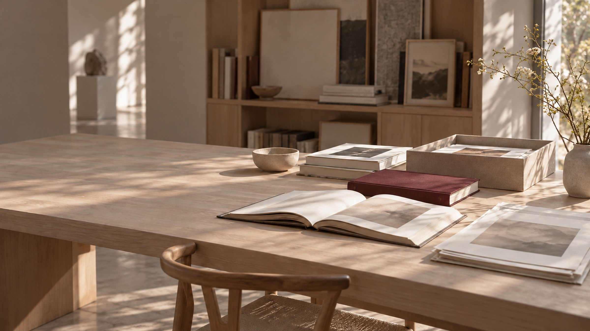
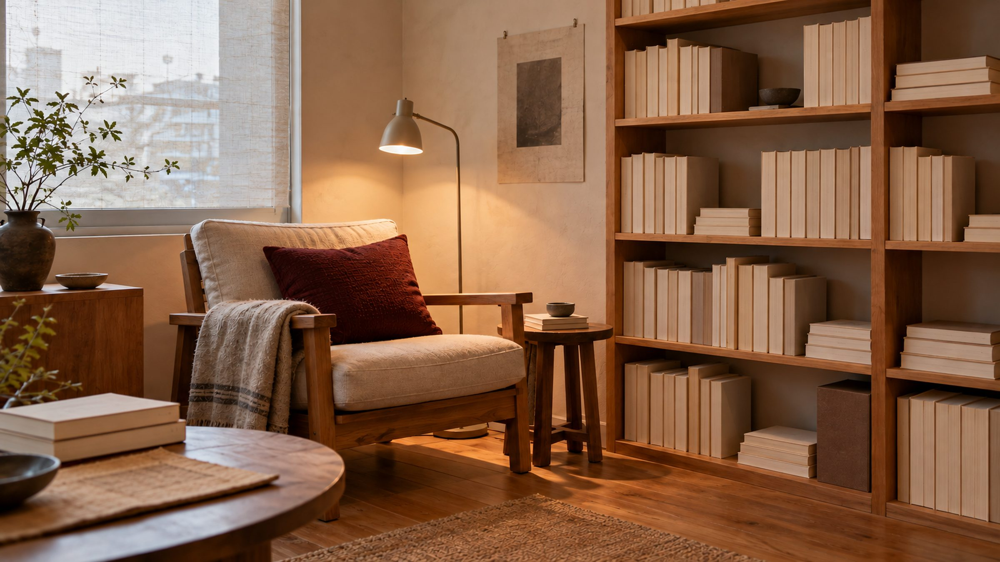
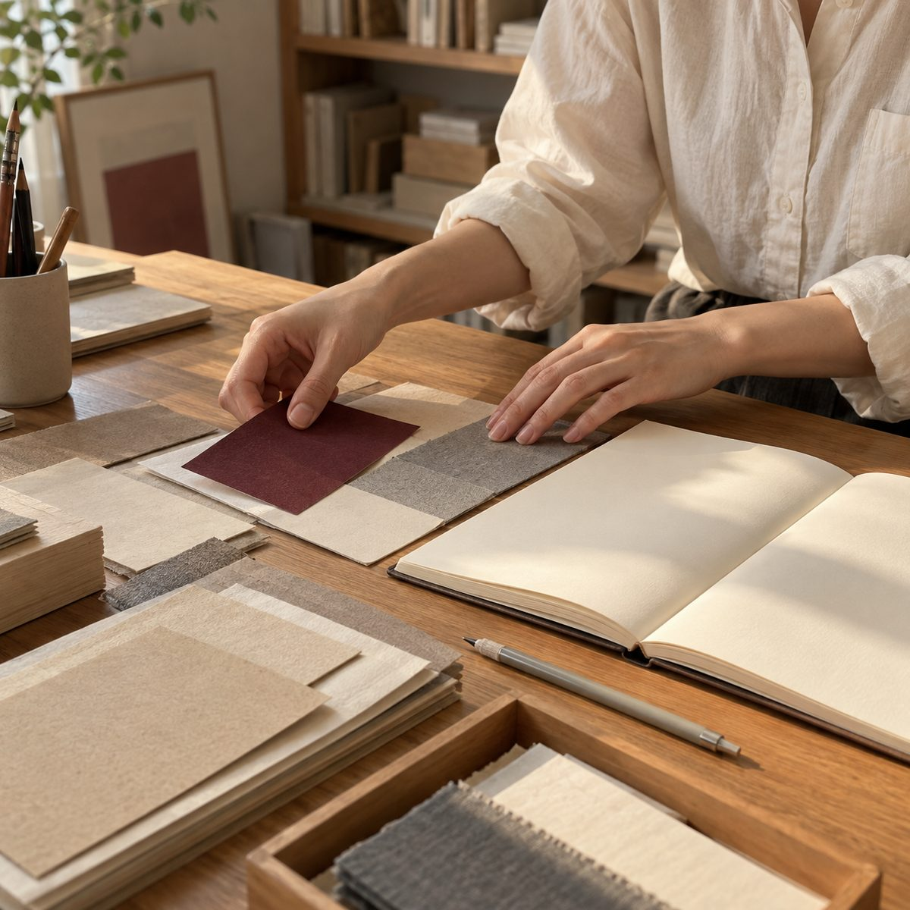
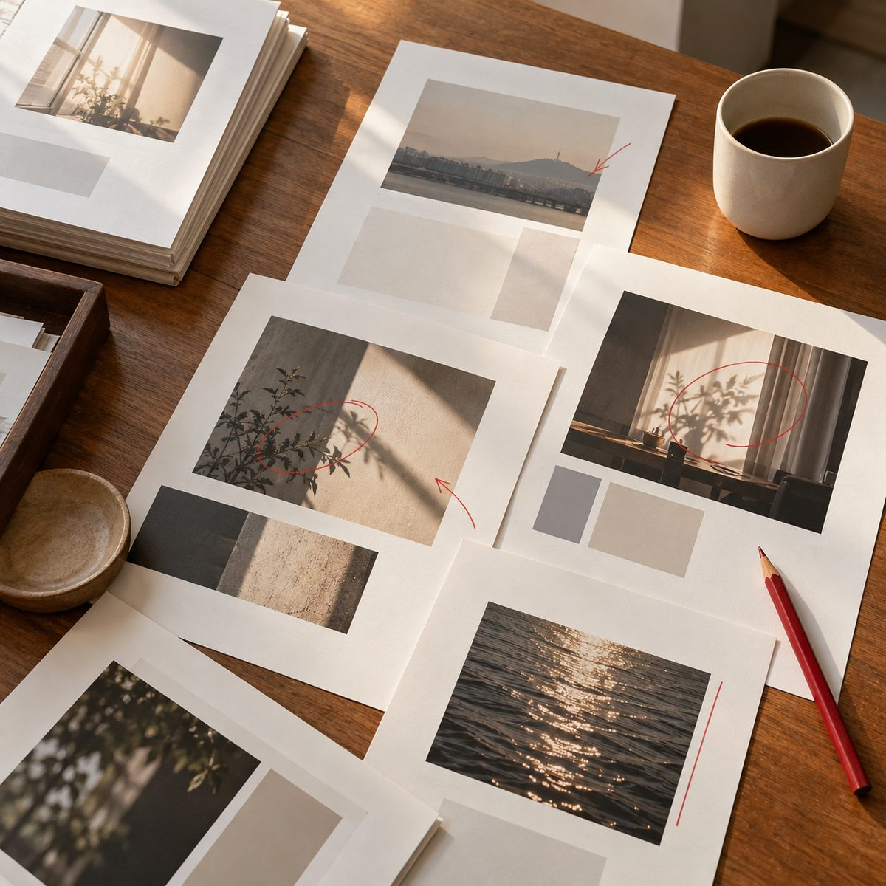
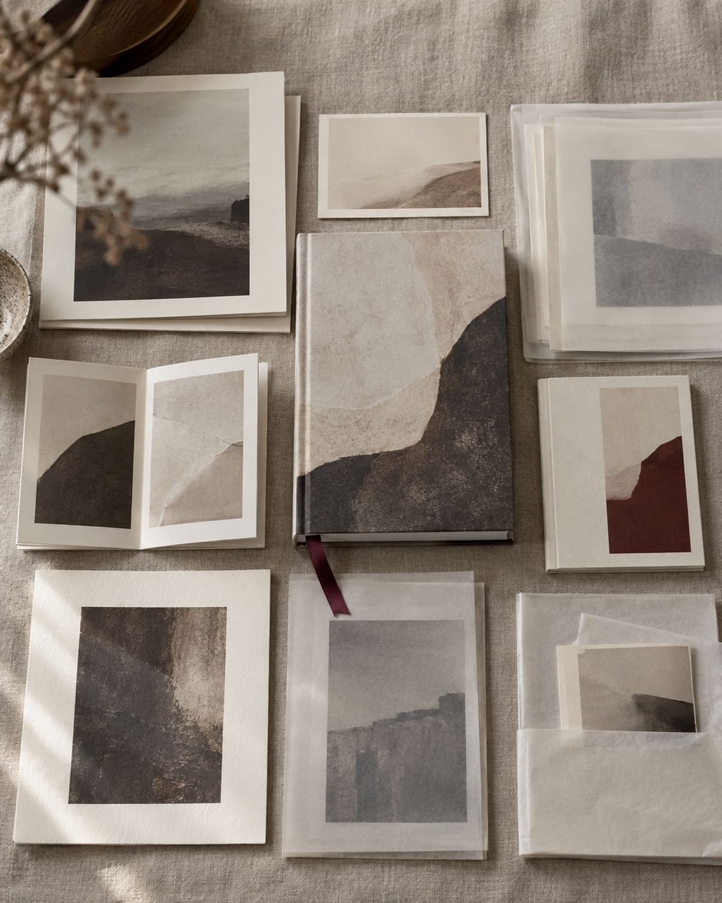
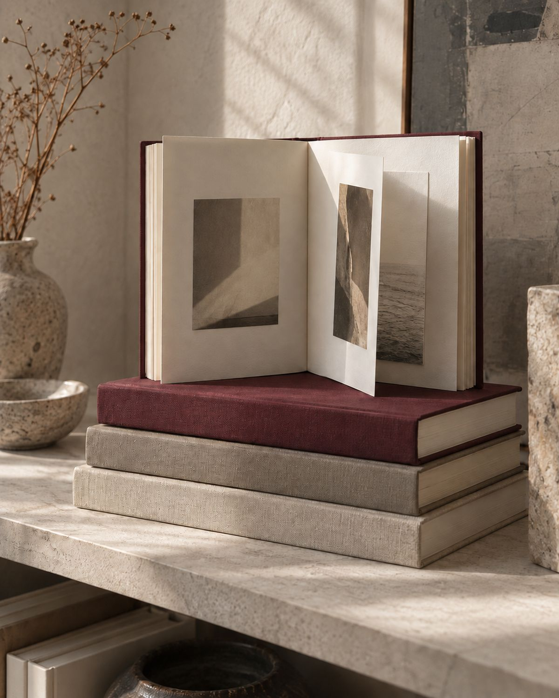
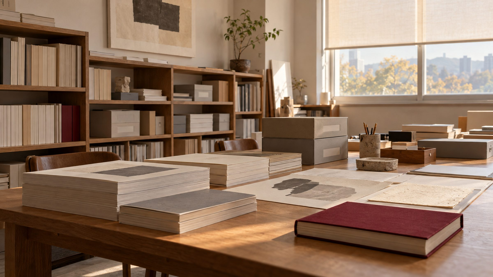

HERO-VIDEO · 16:9 · 배경 전체 영상 자리 (Flow 제작)SCROLL
기록과 사람이 잠시 머무는 곳
정거장은 수많은 이동 속에서 잠시 멈추어 서고, 서로 다른 방향을 가진 이들이 만나 다음 목적지로 떠나는 공간입니다. 문화정거장은 문화예술의 기록, 사람의 이야기, 창의적인 영감이 잠시 머물렀다 가치 있게 확장되는 쉼표이자 연결점입니다.
문화예술과 콘텐츠를 아카이빙하고 재해석하여 가치 있는 결과물로 연결합니다. 체계적인 기록과 창의적인 기획이 필요한 모든 이들을 위한 문화예술 콘텐츠를 만듭니다.
박물관·미술관 10년 — 유물·아카이브 관리와 전시기획 · 디자인 기업 에디터 3년 — 웹진 창간과 운영 · 다수의 문화예술 연구 프로젝트
10년의 박물관·미술관 · 3년의 웹진 에디팅 · 多수의 연구 프로젝트

도판 1 — 머무는 서가세 가지 역할, 하나의 흐름
기록이 모이고, 맥락이 다듬어지고, 새로운 가치로 연결됩니다. 세 역할은 같은 무게로 움직입니다.
콘텐츠 기획자PLANNER
문화적 영감을 모아 콘텐츠의 방향을 세웁니다.

아키비스트ARCHIVIST
기록을 수집하고 분류해 오래 남깁니다.
에디터EDITOR
모은 기록을 재해석해 가치 있는 콘텐츠로 엮습니다.

머물렀다 가는 기록들
전시의 팸플릿과 도록, 현장의 사진, 사람의 인터뷰 — 문화적 가치가 있는 기록을 모으고 맥락을 붙여 남깁니다.
NO. 001 — 전시 기록
전시 팸플릿 · 도록 아카이브
전시가 끝나도 사라지지 않도록, 인쇄물과 기획안을 주제별로 분류해 남깁니다.

AR-014:5NO. 002 — 사람의 이야기
현장 인터뷰 기록
창작자·관계자·지역 주민의 목소리를 텍스트로 수집하고 에디토리얼 해설을 붙입니다.
NO. 003 — 브랜드 서사
브랜드 아카이빙 북
흩어진 브랜드의 기록을 모아 기록집·도록·인터뷰집의 형태로 완성합니다.

AR-034:5위 목록은 구성 예시입니다 — 실제 기록으로 교체되며, 기록이 쌓이면 독립된 아카이브 페이지로 확장됩니다.
박물관과 미술관, 웹진과 연구 현장에서
쌓아 온 10년의 기록입니다.
10 YEARS
박물관 · 미술관 전시기획과 아카이브 관리
국공립·사립 박물관과 미술관에서 유물·자료·아카이브 관리, 전시기획, 도록 제작.
연구원 · 큐레이터3 YEARS
문화예술 웹진 창간과 운영
디자인 전문 기업에서 웹진을 창간하고 기획·운영. 국문과 영문 콘텐츠 에디팅.
에디터ONGOING
문화예술 연구 · 아트 프로젝트
다수의 미술 분야 아트 프로젝트와 문화예술 연구 프로젝트에 참여.
기획 · 리서치
도판 2 — 지나온 기록소식과 일정
2026.11
공지
문화정거장 홈페이지를 준비하고 있습니다.
2026.11
소식
아카이브 첫 기록을 정리하는 중입니다.
—
일정
진행 중인 프로젝트 일정이 이곳에 올라옵니다.
예시 목록입니다 — 오픈 후 관리자 화면에서 직접 쓰고 고칠 수 있습니다.
다음 정거장을 함께 그려요
기획, 아카이빙, 에디팅이 필요한 모든 이야기를 환영합니다.
카카오톡으로 상담하기지자체·공공기관 · 문화재단·예술단체 · 기업·브랜드 · 지역 상점·소상공인 · 개인·작가